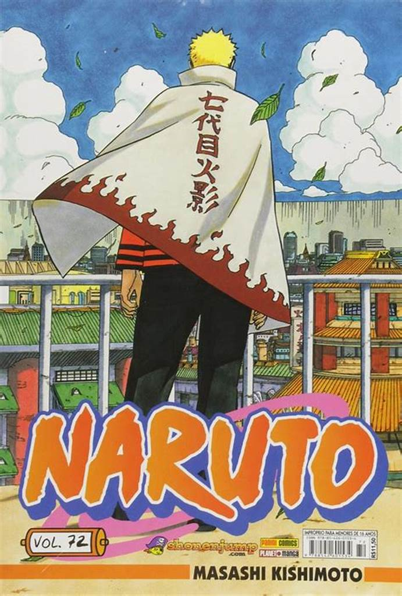
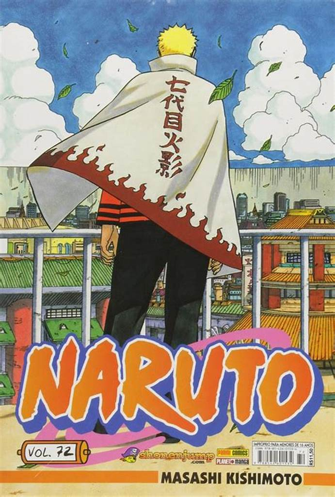

Shonen (少年)
Voltado para jovens do sexo masculino, geralmente apresenta histórias de ação, aventura e amizade. Exemplos populares incluem Dragon Ball e Naruto.
 

Shojo (少女)
Focado no público feminino jovem, com temas como romance, drama e fantasia. Exemplos incluem Sakura Card Captors e Fruits Basket.
Seinen (青年)
Destinado a um público adulto, com temas mais complexos e maduros, como suspense e psicologia. Exemplos incluem Berserk e Tokyo Ghoul.